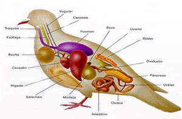

– Su cuerpo es fusiforme está cubierto de plumas.
– Las plumas están formadas por un eje y las barbas. Las que cubren el cuerpo se llaman coberteras y las que lo protegen, plumón.
– Tienen pico y sus extremidades anteriores son alas.
Funciones:
– Son animales endotérmicos (mantienen constante la temperatura de su cuerpo).
– Respiran por pulmones.
– Su fecundación es interna y son ovíparos.
– Sus hábitos alimentarios son muy variados y sus picos están adaptados al tipo de alimentos que toman.
